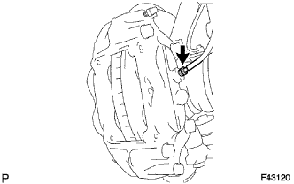

ПЕРЕДНИЙ ТОРМОЗ > СНЯТИЕ |
| 1. СНИМИТЕ ПЕРЕДНЕЕ КОЛЕСО |
| 2. СЛЕЙТЕ ТОРМОЗНУЮ ЖИДКОСТЬ |
| 3. СНИМИТЕ КОЛОДКУ ПЕРЕДНЕГО ДИСКОВОГО ТОРМОЗА |
 |
Снимите фиксатор штифта.
| *1 | Поршневой палец |
| *2 | Фиксатор пальца |
| *3 | Виброгасящая пружина |
Снимите 2 штифта с отверстием.
Снимите виброгасящую пружину колодок переднего дискового тормоза.
Снимите 2 тормозных колодки переднего дискового тормоза с колесного тормозного цилиндра дискового тормоза.
Снимите передние противоскрипные пластины № 1 с каждой тормозной колодки.
| 4. СНИМИТЕ КОЛЕСНЫЙ ТОРМОЗНОЙ ЦИЛИНДР ЛЕВОГО ДИСКОВОГО ТОРМОЗА В СБОРЕ |
|  |
С помощью разрезной головки отсоедините трубопровод тормозной системы от колесного тормозного цилиндра дискового тормоза в сборе.
 |
Выверните 2 болта и снимите колесный тормозной цилиндр дискового тормоза в сборе.
| 5. СНИМИТЕ ПЕРЕДНИЙ ДИСК |
 |
Если диск планируется использовать повторно, нанесите метки на диск и ступицу колеса.
| *1 | Метка |
Снимите передний диск.